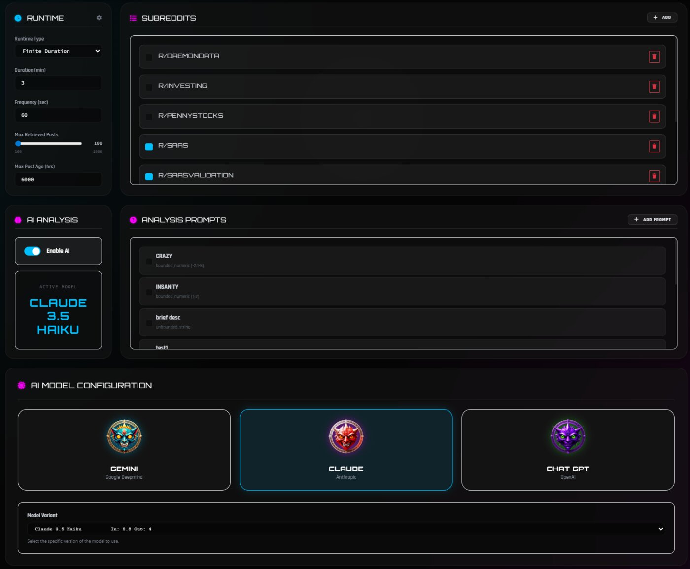

Software · Solo build
Daemon Data
A Reddit monitoring platform I built on my own on Firebase and Google Cloud. Users pick subreddits to watch and write LLM prompts that score each post. A rule graph they draw decides when to send them an alert.
- Role
- Solo build
- Platform
- Firebase, Google Cloud
- Languages
- Python, Node.js
- LLMs
- OpenAI, Anthropic, Gemini
Try itTwo parts of the real interface run here as sandboxes, so you can use them yourself.
- Each subreddit is scraped once. Every user's request for the same subreddit merges into one schedule, so overlapping users share one scrape.
- Reddit accounts are a leased pool. One account tops out near 100 posts a minute. I lease accounts through Firestore transactions and cool them down when they get rate limited.
- Users build their own logic. Typed LLM prompts and a drawn boolean graph run on a metered queue, with billing per prompt that survives retries.
How it works
Each stage runs asynchronously. The scrape side stays under Reddit's rate limit and the LLM side stays under each user's concurrency cap. Work over either limit waits in a queue.
What a user sets up
A workflow is one user's request: which subreddits, how often and how far back to scrape, whether to run AI analysis, which prompts to use and which model runs them.


Shared scrape layer
Many users can watch the same subreddit with different settings. When a workflow is saved, its settings merge into one scheduler document per subreddit that keeps the fastest interval, the largest post count and the widest age window anyone asked for. One scrape then covers everyone.
Posts are stored once and shared. Each user only owns a small record of which posts matched their workflows and what their prompts returned.
More detail
- Leaving is the harder case. Stopping or expiring a workflow runs a cleanup task that removes that user and recomputes the plan from whoever is left, so one heavy user leaving does not keep everyone on their schedule.
- When the merged plan changes, the Cloud Scheduler job is recreated with the new payload.
- Scrapes write three ways: full post updates, light batched time-series points for upvotes and comments (with first and second derivatives), and AI queue entries only when the workflow, flair, prompts and credit balance allow it.
- Reddit listings come in pages of 100, so the post-count control moves in steps of 100, from 100 to 1000.
Bot leasing
One Reddit account can pull about 100 posts a minute, and that limit caps the whole system more than compute does. So each account is a Firestore document with an available_at time.
A worker picks a candidate, then a transaction re-reads available_at and writes the lease only if the account is still free. Two scrapes starting in the same second never share an account. How the lease ends depends on how the scrape went.
More detail
- Success:
available_atgoes back to now and the account rejoins the pool. - Rate limited:
available_atis pushed into the future and the lease is kept, so the account cools down instead of going straight to the next worker. - Auth failure or repeated 403: a long lockout, so the system stops retrying a dead login or a private subreddit every cycle.
Advanced scraping spreads a user's subreddit list over time and a chosen number of accounts using Cloud Tasks. When no account is free, the task reschedules for the earliest recovery time plus jitter, so waiting tasks do not all wake at once. The system stays under Reddit's rate limit and queues the overflow.
Notification graph
Users connect metrics, analysis results, constants, arithmetic and comparisons into a graph with one output node. The backend walks backward from the output, evaluates only the nodes that reach it, and returns one boolean. Half-built branches left on the canvas are never evaluated.
Try the notification builder → Sandbox of the real builder. Nothing is saved.More detail
Two modes. Single-post mode fires as soon as one post meets the condition. Time-horizon mode groups values into half-hour buckets, keeps rolling sums over the chosen window, and only evaluates once there is enough history. A debounce stops the same signal from alerting over and over.
Firing once. A batch can only be evaluated after every post in it has finished analysis, and several workers can finish at almost the same moment. The first worker to see the batch fully drained claims a transaction-backed lock and publishes the evaluation message. The others see the claim and stop. Delivery is idempotent, so a redelivered Pub/Sub message does not send a second alert.
Prompt builder
A prompt is an ordered stack of blocks plus a response type: bounded number, unbounded number, single choice, multiple choice or free text. The builder compiles the stack into the text the model receives, and the same response type tells the worker how to parse the reply. Changing the bounds changes both in one edit, so they cannot drift apart.
Try the prompt builder → Sandbox of the real builder. Nothing is saved.More detail
- The response type supplies the header and footer around everything else. Between them go instructions, post title and body placeholders such as
{POST_TITLE}, a metadata block and up to five few-shot examples. - The builder checks each example's expected answer against the bounds or option list and will not compile until it fits, because the model copies bad examples.
- Each result is stored per prompt with the provider, model, timing, token counts, credits charged, parsed value and the bounds used. Reanalysis can overwrite a bad result without refetching the post.
Metered LLM queue
Scraping never calls a model. It writes queue documents and sends one kickoff message per batch. A dispatcher creates Cloud Tasks only up to the user's concurrency cap, and each worker queues the next item when it finishes. The queue stays busy without going over the limit, whether the burst is ten posts or a thousand.
More detail
- The worker picks OpenAI, Anthropic or Gemini from the model ID. API keys stay in Secret Manager and never reach the browser.
- Tokens convert to credits through a pricing table and are deducted in a transaction. Billing is tracked per prompt, not per post, so a task that retries after finishing three of five prompts is not charged twice for those three.
- Credits are checked twice: before tasks are created and again inside the worker before more model calls. Checking only at dispatch would let a long batch overspend.
Also in the build
Two sign-in providers, one account
Google through Firebase Auth, and Discord through a custom OAuth exchange that mints a Firebase token. A Discord login with an existing email links to that account instead of making a duplicate.
Firestore rules as the client boundary
The browser can read credits, subscription state and protected profile fields but cannot write them. Only the server can, so limits cannot be edited from a console.
Stripe reconciliation
Subscription state is mirrored onto the user document. Plan limits are enforced in a transaction at creation time, so per-user counters stay correct under concurrent writes.
Heartbeats instead of hot writes
Scrape runs report progress through a periodic heartbeat document instead of a write per post. The dashboard stays live without one heavily contended document.